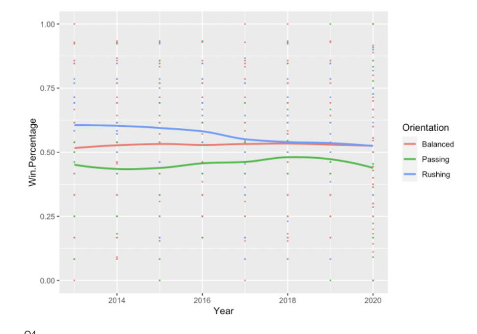
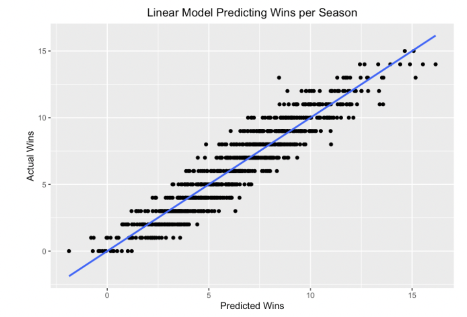

I am currently working on an analysis of College Football data from 2013-2020 for my STOR 320 class. When the final project is finished I will update it with the information, but for now here is my exploratory data analysis.
I looked at the data and asked the question: Can we quantify schools as “rushing oriented”, “passing oriented”, or “balanced” and conclude which group has the most success over time?
From my visualization I can see that balanced teams tend to have a higher winning percentage.
Next, I looked at the question: What variables are best at predicting how many games a team wins in a season? Can we create a model that can accurately use these variables to predict a team's wins?
Clearly, I developed a model that predicts wins accurately. This could be used by coaches, fans, and others to predict season outcomes.
I wanted to analyze the different ways that male reviewers looked at lower-rated movies that were either aimed at a female or male demographic. I hypothesized that there would be a higher rate of negative adjectives for the movies aimed at women. In the future, I want to broaden this project much more. I want to look at more movies and I want to include female reviwers in my analysis. For now, I looked at the top critic reviews for Fast and the Furious and Breaking Dawn Part 1. Both were huge financial successes and are ojectively cult-classics. However, fast and the furious was aimed at men whereas Breaking Dawn was aimed at women.
When I first looked at the output of the most common words in Fast and the Furious, the data wasn't all that useful. This is why I used a data set of words in the english language that included a frequency variable. I then joined this dataset with the ones that I had created for my movies. I created these initial visualizations that measured the most unique words in the reviews.
As you can tell, these visualizations aren't so appealing. Here is what I created in my next step.
I want to keep analyzing this data further but I can tell that I am already seeing results that I find fascinating. There is a clear distinct tone difference between the reviews for Breaking dawn and the reviews for Fast and the Furious. With further analysis, I will break down the exact proportions of negative vs positive adjectives to get a true quanitative answer to this question.